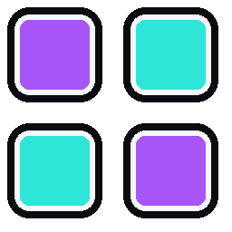
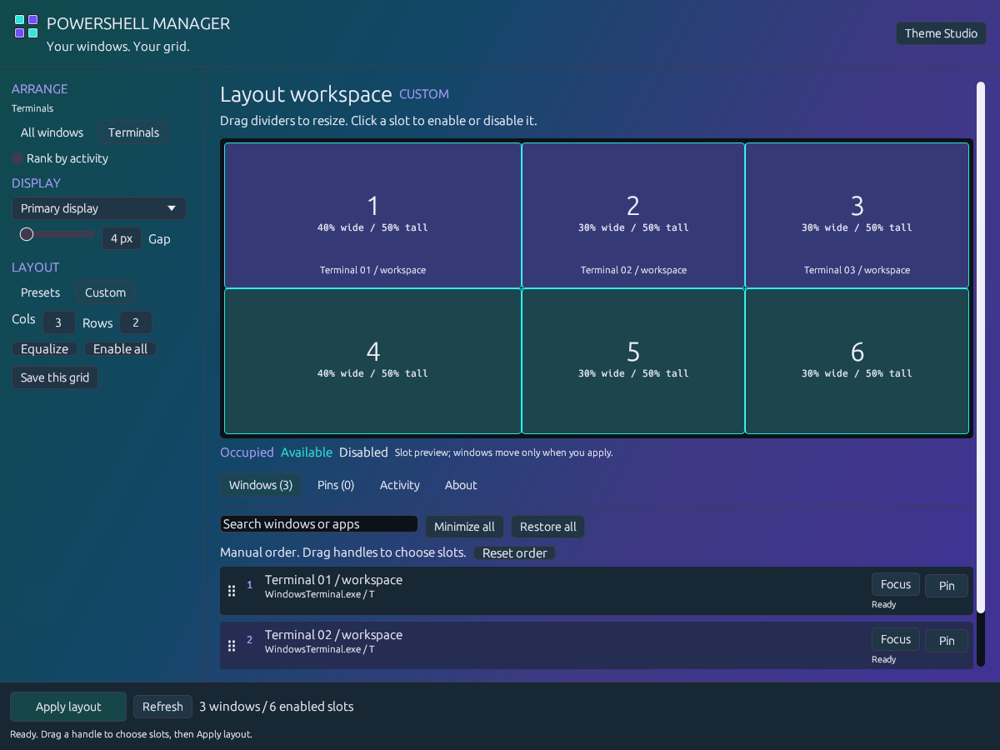
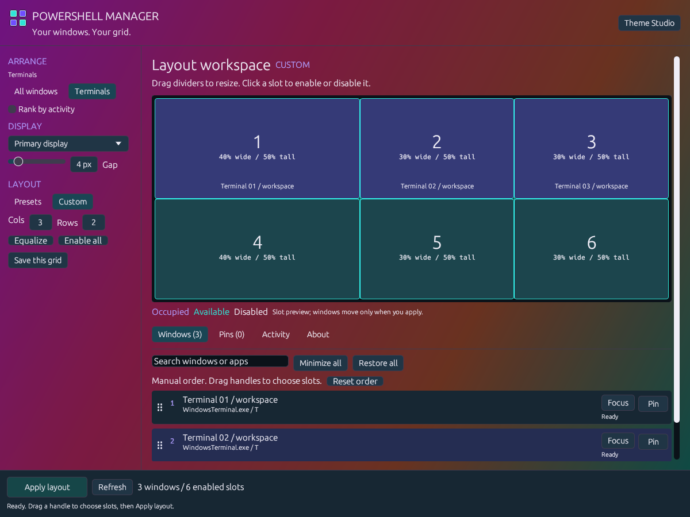
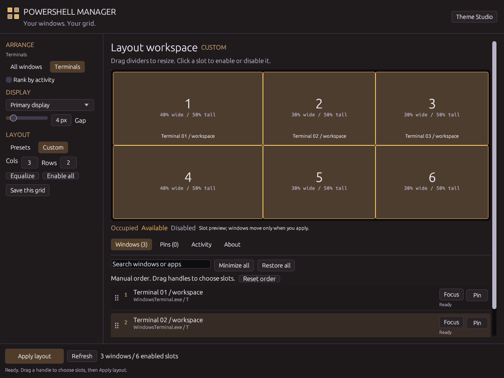
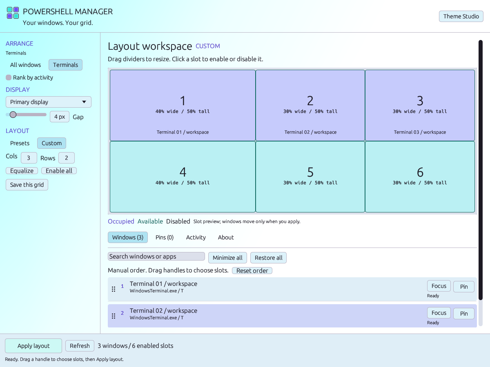
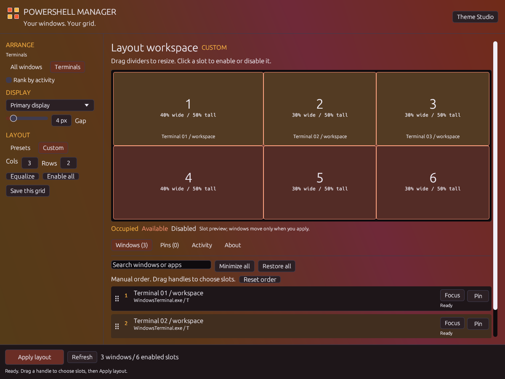
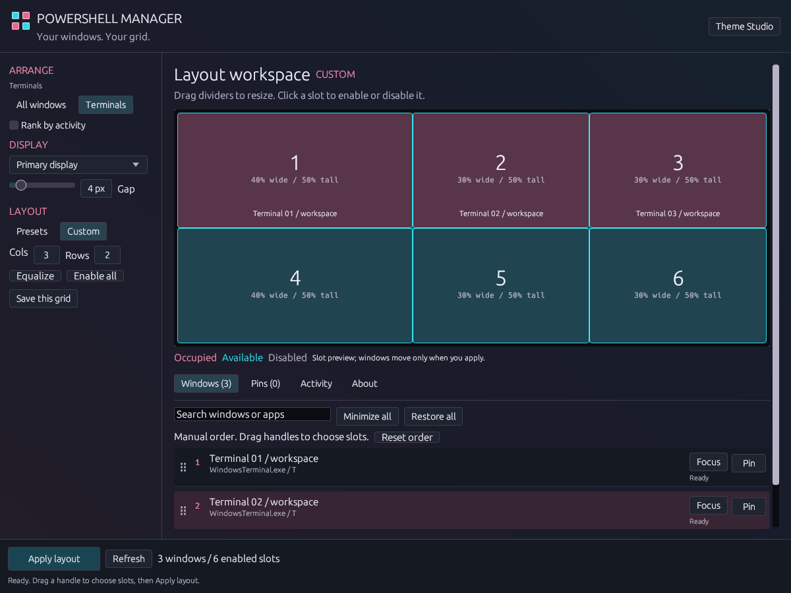
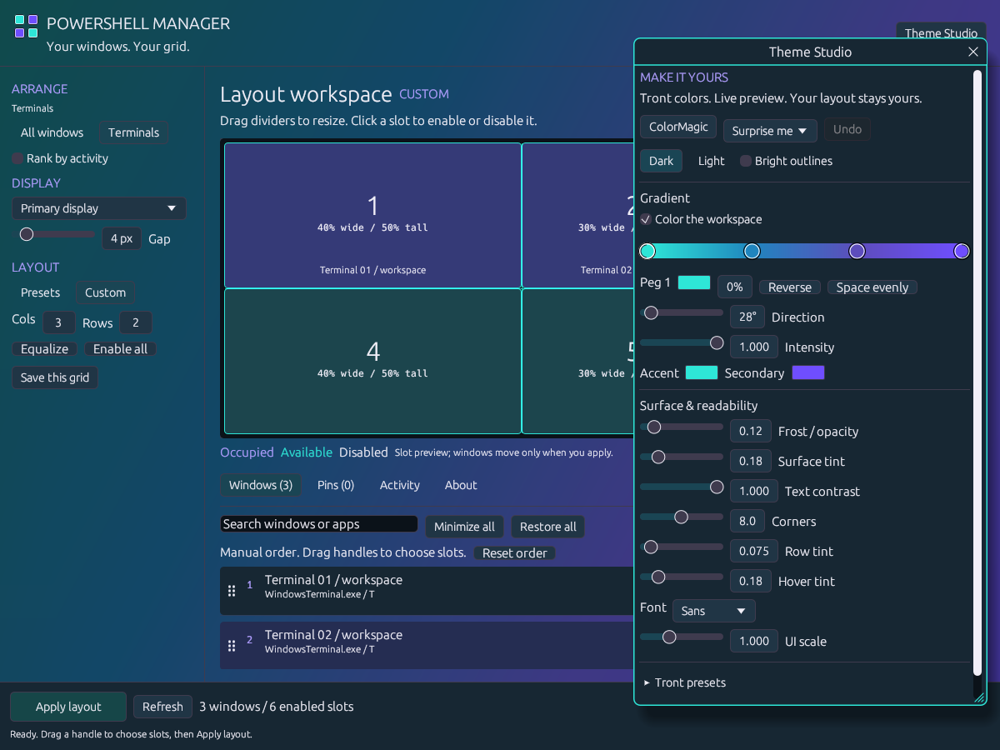

{kind=link}
Make some room.
Pick a grid, columns, or a main-and-side layout. Drag dividers for unequal widths. Disable cells to leave space for something else.

POWERSHELL MANAGERA native Windows layout manager / v0.4.1
A pile of terminals. One grid. Put your main workspace first, give it more room, then make the whole thing yours.

The actual app UI, rendered in different themes. Detected windows come from my desktop; titles are anonymized. Open a shot to see it at full size.
I made this because I keep too many terminals open. Dragging and resizing the same windows every time gets old. The layout tools were always the good bit. Now the rest of the app has caught up.
Pick a grid, columns, or a main-and-side layout. Drag dividers for unequal widths. Disable cells to leave space for something else.
Drag the handles to reorder your windows. Pin an individual terminal to a slot. The grid shows the destinations before anything moves.
Click Apply layout, or use Ctrl+Alt+G. Save your favorite grids and call them up from the tray. Editing the preview leaves your windows where they are.
Same app. Your colors.
Quiet charcoal or loud magenta. Every screenshot below comes from the app's theme engine. Download a theme and import it in Theme Studio.





The Tront treatment
Theme Studio is inspired by Discord's theme system and shares its color tools with Trontop. Roll a ColorMagic palette, move the gradient pips, turn up the intensity, or pull back the frost.
Text contrast, outlines, typography and UI scale are yours too. The four-square logo follows your theme, with contrasting edges to keep it visible.
Save named themes. Export JSON. Swap themes with Trontop. Undo a palette roll without losing your other adjustments.

Windows 11 x64 / Development release
Free for personal and workplace use. Download the ZIP, extract it, and run powershellmanager.exe.
Quit it from its tray menu before opening this version. Your settings stay in your Windows user profile. Run normally to use Apply; --preview is a read-only inspection mode.
This build is unsigned, so Windows may show an unknown-publisher warning. Apps can impose minimum window sizes or reject positioning because of permissions. Minimized windows stay minimized until restored.
Windows Terminal, PowerShell, cmd and other terminal apps are recognized. Switch to All windows for editors, browsers and other visible apps. A tab inside Windows Terminal is still part of one window.
A pin reserves one window in a numbered grid slot. It follows that window during the session. After restarting PSM, matching uses the executable and exact title; identical titles are resolved in list order. Disabled or conflicting destinations fall back to the queue with a warning.
The source is public under Apache 2.0 with Commons Clause 1.0. Personal and workplace use are free; redistribution retains the credits and terms. Selling products or services whose value comes entirely or substantially from the app is restricted, so this is source available rather than an OSI open-source license. Read the full license.
Settings and activity history stay locally in your user profile. There is no account or telemetry upload. The app checks its public GitHub releases for updates; downloading one is your choice.
{kind=link}
{kind=link}
{kind=link}
{kind=link}
{kind=link}